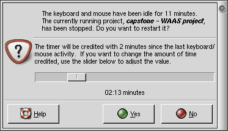
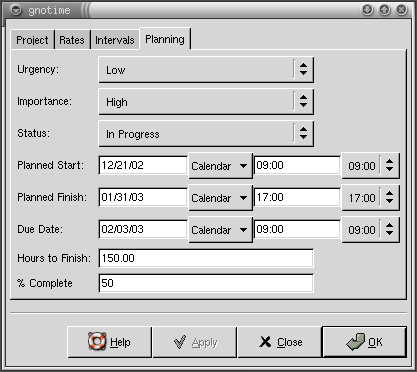
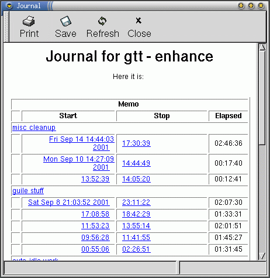
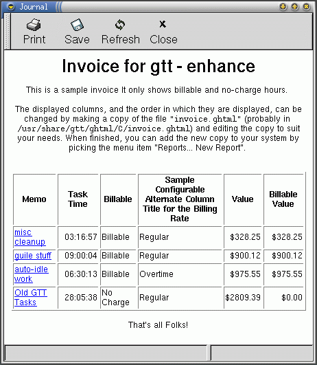
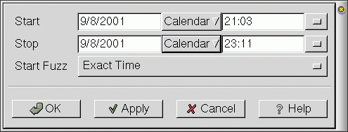
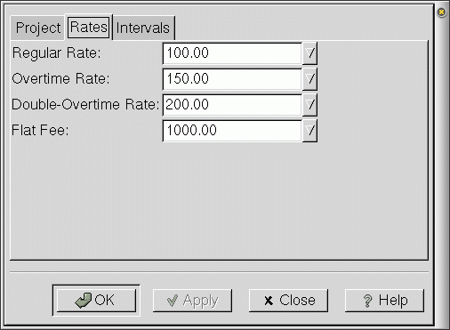
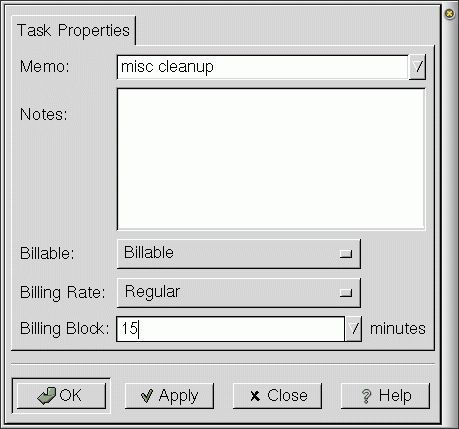
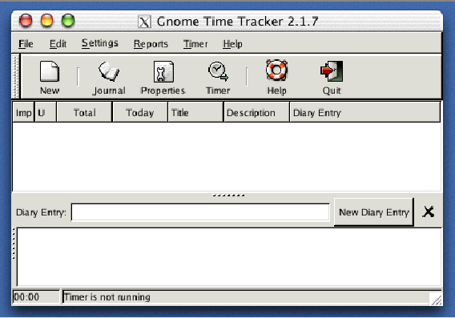

GnoTime (formerly known as GTT) - The Gnome Time Tracker

The Gnome Time Tracker is a to-do list/diary/journal tool
that can track the amount of time spent on projects, and,
among other things, generate reports and invoices based on
that time. I've used it to keep shopping lists, organize ideas,
track bug reports, keep a diary of activities, provide
weekly status reports to management, and even as a consultant billing
system. The reason it can be used for all of these things
is that it supports five basic, simple features:
- Multiple To-Do Lists that can be sorted by the
priority/importance of the tasks in the list. The to-do
items can be organized into categories, arranged in a
heirarchical way. This makes it easy to maintain
both business and personal items in the list, or
handle many different projects, while keeping them
separate from each other.
- A pair of Diary/Journal areas that can be used
to keep long and detailed notes and diary entries.
The project description area allows a multi-paragraph
description or status to be typed in. The diary
area allows day-to-day notes to be associated with
a set of timestamps, so that one has a record of what
one did on any given day.
- A Running Timer, with time totals, for each
project/task. One starts the timer by clicking on a
task: it will measure the amount of time that you are
in front of the computer. If it detects that the
keyboard/mouse are idle, it will stop the clock.
If the clock stays stopped too long, it will nag you to
start it up again. You can view time totals by day,
week, month or year.
- A Billing Status dialog for each diary entry.
You can mark any given diary entry as billable/non-billable,
paid or pending, and set the billing rate. Each
project can also be marked up with a set of
project-planning information: planed start, end and
due dates, hours to finish, percent-complete.
This is in addition to assigning an urgency/importance
to each project, as well as a status (completed/in-progress
not-started/canceled).
- A half-dozen different HTML Reports that can
slice and dice your lists. There's a Journal report
that shows all of the diary entries for one given project.
There's an Invoice
report that summarizes the time spent on each entry,
and computes a dollar amount for it. There's a Status
Report that prints the title of each project, together
with the paragraph-long descriptions of each. There's
a ToDo report, which prints only the project title, the
importance/urgency, and the completed/in-progress/not-started
status. The Daily report summarizes the total time
spent on a day-by-day basis, and lists each of the projects
that were worked on in a given day. Each of these reprts
can be customized. And, because they're HTML, you can
even publish them as web pages. (Yes, I've thought of
using GnoTime as a weblog management/publishing tool).
More Details
We'd like to tell you a bit more about some of the features:
- Simple GUI, Simple Navigation
- We've worked to try to make the GUI as simple as we can,
and we're not done yet. GnoTime will auto-save data,
so that you don't have to. (It also means no data loss
if something crashes). The heirarchical tree of projects
is managed through drag-n-drop, and can be navigated from
the keyboard, with arrows keys and carriage returns.
The left/right arrow keys expand/collapse project lists.
Hitting return starts and stops the timer.
- Auto-Merge/Cleanup of Short Intervals Support
- We also try to unclutter a mess of timer stops/starts
by trying to clean up time-keeping cruft.
Extremely short time intervals are automatically removed
from the logs (the length is configurable).
Slightly longer but still short intervals
are auto-merged into nearby neighbors. Short gaps between intervals
are coalesced as well. You can specify a time period of 0 seconds
to turn these features off.
- User-Customizable HTML-based Reports
- The journal/report GUI is based on template HTML pages. If you know
HTML, then you can create customized report pages. Particularly
handy for slapping the company logo and mailing address on the top
of the page, and generating a unique, custom look.
User-defined reports (contained in ghtml files)
can be added to the
menus by typing in the filename into the 'New Report' GUI dialog.
Admittedly, hacking on HTML templates is not the easiest
thing in the world: you can't (yet) customize reports
with a WYSIWYG eidtor (although we are contemplating one).
But we figure that HTML can't be that hard: the nerd in
you will not be intimidated. It might be a bit scary to
mention scheme at this point, but lets just say that
you can be totally ignorant of scheme and still be able
to do some pretty fancy customization, above and beyond
what HTML lets you do, by hacking on the scheme in the report
templates.
Fresh in version 2.1.9 is the ability to embedd simple SQL
queries in the report templates. We know that many of you
power users know SQL, so we figure you'll like this. The
SQL gives you the ability to query for only those projects/tasks
that meet a certain criteria, which is handy if you've got
years worth of data and years worth of project lists and
to-do items, and you want to just fish out the ones from
last month.
Disclaimer: we're still working on SQL support. It works,
but you can't yet query everything.
- Shell Commands
- A shell command can be executed whenever a project timer is
started or stopped. The project title, description and other
parameters can be passed to the shell command. We don't know
what the hell you power users do with this feature; its
been in GTT since the very earliest releases.
- XML File Format
- All project and journal data are stored in an XML file format.
This should simplify future interoperability and data access concerns.
- Multi-Language Support
- The GnoTime menus and messages have been translated to dozens of
languages. There are message catalogues for the following locales:
az bg ca cs da de el en_GB es et eu fi fr ga gl hu it ja ko lt lv ms nl
nn no pl pt pt_BR ro ru sk sl sv ta tr uk vi wa zh_CN zh_TW
Some of these translations need an update; they're quite old and
out of date. We need help here.
Translations are needed for the manual. Actually, the manual needs
a complete re-write; its three years old, and doesn't discuss most
of the newer features.
Screenshots
The following screenshots are from the current Gnome2 version of
GnoTime, unless otherwise noted.
The main window screen, showing all-time and daily totals:

The same main window screen, but with additional columns
enabled to show project status. Note the new notes-taking
area at the bottom of the screen.

The inactivity popup dialog, which triggers when
the keyboard and mouse has been idle some period of time.
Note how this allows a project to be credited with an
adjustable amount of time. Being able to adjust the time
credited directly, without having to fuss with menus and
GUI dialogs is a very handy feature when you are distracted by
interruptions.

The dialog box for specifying project-planning status.
The use of this diaolog is optional, but can be useful for
ranking the importance and urgency of to-do list items.
Note the distinction between importance and urgency:
An important task is one that must be done,
sooner or later. An urgent task should be
done as soon as possible.

Below is the short-form view of journal entries
(this screenshot is from the gnome-1.4.1 version).
Note that this report is is generated as html,
displayed in a gtkhtml window.
Clicking on the hot-links brings up a popup
menu that allows you to cut, paste and edit the entries.
You can create much better looking reports by modifying
the html template for this report. If you know html,
this is easy to do.

An invoice generated from the above journal.
(this screenshot is from the gnome-1.4.1 version).
Note that this report is is generated as html,
displayed in a gtkhtml window.
Clicking on the hot-links brings up a popup
menu that allows you to cut, paste and edit the entries.
You can create much better looking reports by modifying
the html template for this report. If you know html,
this is easy to do.

Individual time intervals may be modified.

Per-project billing rates can be specified ...

As well as how an individual task should be billed.

Works on Apple Mac OSX too
Here's a screenshot under Macintosh OSX Fink:

News
The latest releases continues to focus on usability and convenience
features, making GnoTime easier to use and thus more powerful.
- New in the 2.1.8 release
- This release adds support for simple report queries. In particular,
reports can now be generated for all tasks that occured between a
pair of dates; an extremely general query system is now in place,
although it is not used except to perform this simple date query.
Toshio Kuratomi provided a major cleanup of the documentation
subsystem. Goedson Teixeira Paixao provided a new pt_BR translation.
A variety of minor bugs were fixed, includeing a crash of the
'yelp' help browser.
- New in the 2.1.7 release
- Version 2.1.7 fixes some internationalization bugs, and ports the
configuration system to GConf2. The 'custom reports' menu is now
editable.
- New in the 2.1.6 release
- The "Daily Report" will show not only the total hours worked,
day by day, but will also show a bullited list of tasks worked
that day. The main window display can now show total hours worked
for previous day and previous week. Sub-projects can now be fetched
via scheme, allowing them to be included in reports. The scheme
subsystem now includes an elementary type system, allowing more
complex structures to be built. A half-dozen different crashes
have been fixed.
- New in the 2.1.5 release
- The main window has been reformulated in a big way: It
now includes sub-panels for editing project and diary notes.
This 'notes area' makes it far more convenient to make
extensive notes and 'blog' your way through a set of projects.
Also fixes bugs with backup timestamps, also with cut-n-paste
of project trees.
- New in the 2.1.4 release
- The scheme interface re-design has been finished.
This means that the HTML reports are far, far more
configurable, and can be made to look much prettier.
The old, nasty table-formatting features have been removed.
It also means that tab-delimited export now works cleanly,
and other export formats can be easily added.
- New in the 2.1.3 release
- The time credited to a project after the keyboard inactivity
timer has tripped is now very easily adjustable. Thus, if
the timer tripped because you were on the phone, you can now
trivially credit the project with any time, from zero to
the full interval since the last keyboard/mouse activity,
by simply adjusting a slider in the timeout popup.
Backup copies of data automatically saved, automatically
pruned back, thus providing an archive of old data as well
as avoiding catastrophic data loss.
- New in the 2.1.2 release
- A "major" change in the user interface: one must now
double-click to start a project timer running. This
makes navigation and task editing much easier and more
robust than the single-click interface, which was prone
to accidental-click problems, especially on laptop touchpads.
This makes GnoTime much more usable on laptops.
The 2.1.2 version is also the first official stable,
non-beta release GnoTime. (December 27, 2002)
The 2.1.2 version also included:
- Added new to-do list report
- Run shell commands when project started/stopped (fixed)
- Added tab-delimited export of to-do list
- Removed cause of possible crashes (buffer over-run
for large datasets).
- Remember what state tree was left in between sessions.
- Much improved scheme support in reports
- Language translations now included as part of dist
- Can now save HTML reports to file (again)
- Now detects inactivity due to laptop shutdown
- Fix start/stop timer icon in toolbar
- History:
- GnoTime used to be known as GTT and was a part of the gnome-utils
package. It has now been split out of that package, and ported to
Gnome2. The Gnome2 port is now officially 'stable' and (more-or-less)
ready for general, production use. It does still have a variety
of blemishes, but these don't seem to be show-stoppers at this point.
Note that the gnome-1.4 version of GTT/GnoTime is still
available as a part of the
gnome-utils package on cvs.gnome.org,
in the gnome-utils-1-4 branch.
It is NO LONGER A PART OF GNOME_UTILS-2.0
If you are interested in gtt version 1.4, and want the most
recent gnome-1.4 CVS source, you
should check out the gnome-1.4 branch, as follows:
cvs -z3 -d :pserver:anonymous@anoncvs.gnome.org:/cvs/gnome checkout -r
gnome-utils-1-4 gnome-utils
Please note that this gnome-1.4 branch fixes some critical gtt
bugs! Please note that these fixes are NOT in the latest
gnome-utils 1.4 tarball!
Technology Choices
GnoTime is currently written in C and Scheme. C is used to implement
all of the core functions, whereas Scheme is used to generate the
HTML reports. The Scheme/HTML combo was choosen in order to make
it easy to customize reports, while allowing the result to be easily
viewed in a browser, sent by email, etc. The GUI system is
all in Gnome, using the Glade interfce designer.
The file format is in XML, folloowing current trends.
Roadmap
GnoTime still needs some serious work in several areas. Help is needed.
- GUI Enhancements
- The GUI can be made simpler, easier and more powerful at the same
time. This is my current development focus: improve usability
without adding feature bloat. Easier said than done.
- E-Mail Reports
- There are two things I'd like to do that one would think are real
easy: add a button allowing a report to be emailed, and add a button
to automatically view a report with your default web browser.
Amazingly, this is quite hard, and at this time, Gnome ofers no
infrastructure to make this easy.
- Better Report Generation
- Certain reports, especially the invoice reports, would benefit
from a better report generator. I'd like to add buttons to
show/hide completed projects, etc.
- GnuCash Integration
- It should be possible to import GnoTime invoices into GnuCash.
- SQL Support
- A frequent request is for a multi-user version of GnoTime.
A basic level of multi-user capabilities can be achieved by
adding support for an SQL backend. This should be relatively easy,
as all of the project and journal functions were segregated when
the XML file format was added.
- Web Tinkering
- GnoTime already uses some of the buzzwords of the web: HTML and XML.
That makes it an interesting playground for experimenting with
web-enabling technology. Can it be made into a client-server
system, running on the open internet?
- Project Management Integration
- It might be interesting to have GnoTime work as applet or
embedable component for an extended/sophisticated project
management system. For example, it should be interesting to make
GnoTime a front end to something like
TouxDoux,
or MrProject
or even the web/PHP-based
Double Choco Latte. Alternately, GnoTime could
be integrated into simpler calendar/todo systems, such as Evolution.
Getting GnoTime
Visit http://sourceforge.net/projects/gttr/ and follow the links to download tarballs, browse CVS, etc.
Please use GnoTime version 2.1.8 or later, as available on sourceforge.
Please avoid the gnome-1.4 version, as that version has some known
bugs, limitations and usability problems that won't be getting fixed.
Bug Tracker
The recommended bug tracker at this point is the one located at
sourceforge. Go to the sourceforge project page, and work from there.
Web Site Mirrors
There are two web site mirrors:
Mailing Lists
There is a mailing list; see the sourceforge project page for info
on subscribing.
Similar/Different Projects
- Gournal,
Note-taking tablet application. A paper-like interface
allows you to hand-write notes. This is a gnome app
(actualy, gtk2/perl).
-
Jarnal, a Java-based note-taking tablet app.
Last modified by Linas Vepstas <linas@linas.org>
March 2004
In memory of the World Trade Center bombing, which occured while
the first major revision of gtt was being written.